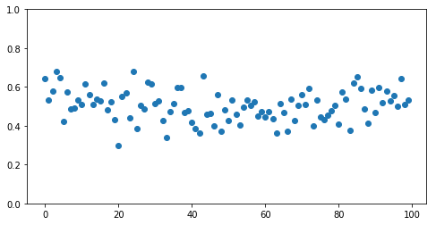
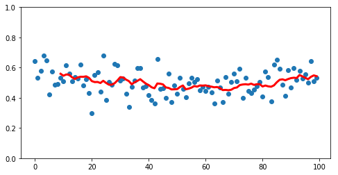
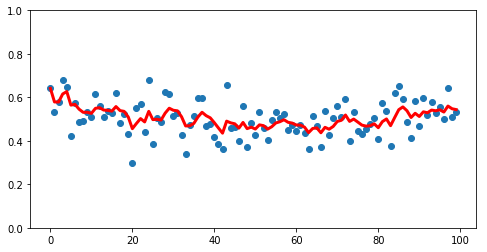
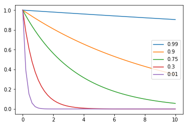
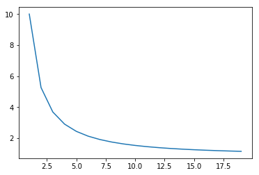

Exponentially Weighted Moving Averages
Say we have a dataset like the following.
%pylab inline
from helpers import make_dataset, make_fig
X, y = make_dataset()
make_fig(X, y);Populating the interactive namespace from numpy and matplotlib

If we drew a line following the shape of the data, there would be a clear dip in the middle.
We could achieve by rolling through the data, taking the average of the 3 points we’re looking at.
import pandas as pd
rolling = pd.Series(y).rolling(3).mean()However, this completely throws away the first couple rows, as they don’t have any historical data to average with
rolling[:5]0 NaN
1 NaN
2 0.583812
3 0.596528
4 0.635658
dtype: float64
But by the middle of the dataset, we’ve got a pretty good representation going
rolling[50:60]50 0.427411
51 0.480765
52 0.472817
53 0.465212
54 0.454143
55 0.479187
56 0.512444
57 0.521262
58 0.492924
59 0.481478
dtype: float64
Which allows us to make plots like this
rolling = pd.Series(y).rolling(3).mean()
ax = make_fig(X, y)
ax.plot(X, rolling, linewidth=3, color='r');
And we can smooth this out by taking a larger value for the number of rolling rows to consider at once.
rolling = pd.Series(y).rolling(10).mean()
ax = make_fig(X, y)
ax.plot(X, rolling, linewidth=3, color='r');
However, this lops off more and more data from the beginning as we smooth.
A Different Rolling Algorithm
Andrew Ng introduces an alternative approach in Week 2 of Improving Deep Neural Networks called Exponentially Weighted Averages. Consider a simple example where xt is the raw value at time t and v is the value of the algorithm.
$v_0 = 0$
$v_1 = 0.9v_0 + 0.1x_1$
$v_2 = 0.9v_1 + 0.1x_2$
$v_3 = 0.9v_2 + 0.1x_3$
$…$
Expanding out for v3, we get
$v_3 = 0.9(0.9v_1 + 0.1x_2) + 0.1x_3$
$v_3 = 0.9(0.9(0.9v_0 + 0.1x_1) + 0.1x_2) + 0.1x_3$
$v_3 = 0.9(0.9(0.9(0) + 0.1x_1) + 0.1x_2) + 0.1x_3$
Reducing, it quickly becomes obvious where the “Exponential” part comes in
$v_3 = 0.9^2 *0.1x_1 + 0.9*0.1x_2 + 0.1x_3$
Another coefficient
In this example we used values 0.9 and 0.1. More generally, we pick values beta and 1 - beta that add up to one.
$v_t = \beta v_T + (1 - \beta)x_t$
$T = t-1$
(T substitution because LaTeX sucks with markdown, lol)
And since beta is less than one, as we move further and further into our v values, increasing the exponent attached to beta, it goes closer and closer to zero, thus giving less weight to historic values.
Properties
Smoothness
Because this weighting is multiplicative across all observations, it makes a much smoother curve. Compare our previous implementation of a naive rolling average
rolling = pd.Series(y).rolling(3).mean()
ax = make_fig(X, y)
ax.plot(X, rolling, linewidth=3, color='r');
To the less-noisy EWM approach
new_rolling = pd.Series(y).ewm(3).mean()
ax = make_fig(X, y)
ax.plot(X, new_rolling, linewidth=3, color='r');
Additionally, note starting with v0=0, we’ve got data for each point
Sizing beta
Generally speaking, the higher your value for beta, the larger the exponent needs to be for the coefficient to approach zero
betas = [0.99, 0.9, 0.75, 0.3, 0.01]
xrange = np.linspace(0, 10)
for beta in betas:
plt.plot(xrange, beta ** xrange, label=str(beta))
plt.legend(loc='right');
Therefore, the higher your beta, the more days you consider at once in your rolling window.
beta=0.9 is pretty standard.
Bias Correction
It’s worth mentioning that the pandas.ewm() method did us a solid behind the scenes when we called it.
If you look back at our first dummy example, our value for v0 was simply 0. Thus when you plot out all of the v’s, you get the purple line– starts off at 0, but eventually represents a smooth average of values.
from IPython.display import Image
Image('images/bias_correction.png')
To get us plotting the green line, pandas actually used Bias Correction to correct for the fuzziness in early values. Essentially what this means is doing another step after the calculation of vt that involves dividing by 1 minus the bias term to the power of whatever step you’re on
Concretely:
$\frac{v_t}{1 - \beta^t}$
Plotting that out over time, you can see that the denominator quickly goes to 1, thus becoming a non-factor in our calculation, and syncing up with the green line above.
x = np.arange(1, 20, 1)
y = (1 / (1 - .9 ** x))
plt.plot(x, y);